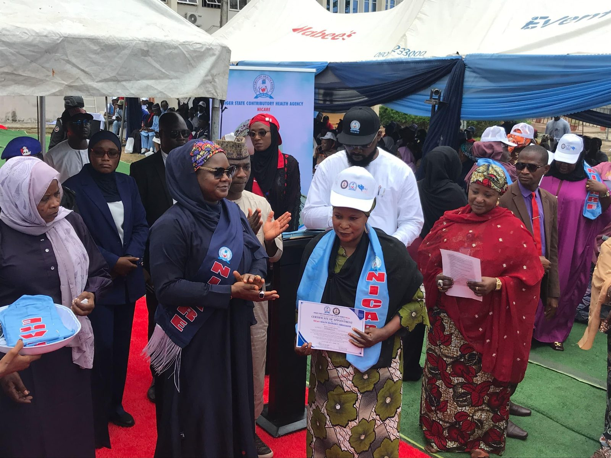

Sulayman Abu-Bakr
Sulayman Abu-Bakr is a public health leader with over a decade in Nigeria's health system.
More about Sulayman
He leads the Niger State Contributory Health Agency, where enrolment grew 83.3% in two years.
See the impactHe built national immunisation data systems, then brought digital claims and AI-supported tracking to NiCare.
Read his careerFor over a decade, Sulayman Abu-Bakr has worked where health policy meets data: first building national immunisation and health information systems at the National Primary Health Care Development Agency, and since January 2024 leading the Niger State Contributory Health Agency toward universal health coverage.
Full biographyGet in touch: sulayman.abu-bakr@nigerstate.gov.ng